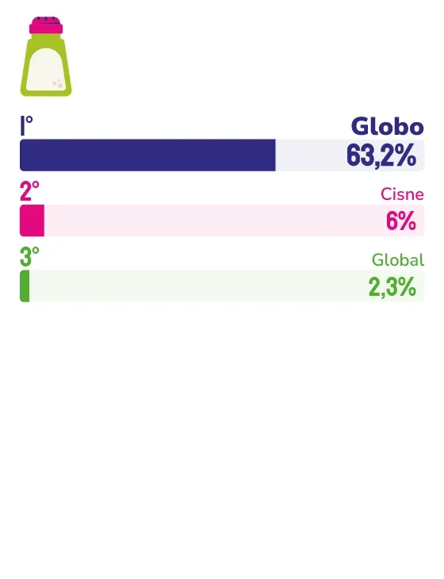

SAL
Com certificações internacionais e décadas de presença nos lares do Espírito Santo, o Sal Globo mostra que tradição e ousadia podem andar juntas.
Tem produtos que a gente compra, e tem produtos que a gente simplesmente coloca no carrinho porque sempre foi assim, porque a mãe também usa ou porque o sabor é familiar. O Sal Globo faz parte dessa segunda categoria. Marca mais lembrada espontaneamente na categoria sal na pesquisa Marcas Ícones 2026, a empresa capixaba acumula décadas de presença nos lares do Espírito Santo e uma relação com o consumidor que vai muito além da gôndola do supermercado.
Para a sócia e diretora financeira do Sal Globo, Maria Izabel Braga Ferlin, essa lembrança tem nome: afeto. “Quando o consumidor lembra da nossa marca, ele a associa à tradição, confiança, qualidade e familiaridade. É uma lembrança afetiva, construída com o tempo”, explica. Mas por trás do afeto, há rigor: a empresa mantém certificações internacionais como FDA, ISO 22.000 e IFS, que atestam padrões exigentes de qualidade, segurança alimentar e rastreabilidade.
O momento que melhor define o caráter da marca, segundo Maria Izabel, aconteceu durante a pandemia. Enquanto o mundo hesitava e a maioria das empresas cortava investimentos, o Sal Globo foi na contramão e construiu uma nova refinaria. “Foi uma decisão desafiadora naquele momento, mas que se mostrou extremamente acertada”, lembra a diretora. Hoje, a expansão garante uma maior capacidade produtiva e eficiência para atender um mercado que ela descreve como “exigente, afetivo e muito ligado às marcas que fazem parte da sua história”.
Para os próximos anos, Maria Izabel adianta que a empresa seguirá investindo em ampliação da capacidade produtiva e modernização industrial, crescimento que, na visão dela, deve ser sustentável e sem abrir mão da essência. “Algumas coisas não podem mudar: a qualidade do produto, o respeito pelo consumidor, a seriedade no trabalho”, reforça. É essa combinação entre ousadia para crescer e firmeza para não mudar o que importa que mantém o Sal Globo na mesa e na memória dos capixabas.

Maria Izabel Braga Ferlin
Sócia e diretora financeira do Sal Globo
“Enquanto muitas empresas optaram por reduzir investimentos diante das incertezas da pandemia, o Sal Globo decidiu seguir na direção oposta e construir uma nova refinaria. Mais do que um investimento em infraestrutura, foi uma demonstração de confiança no futuro da empresa, nos nossos colaboradores, parceiros e consumidores.”
61
